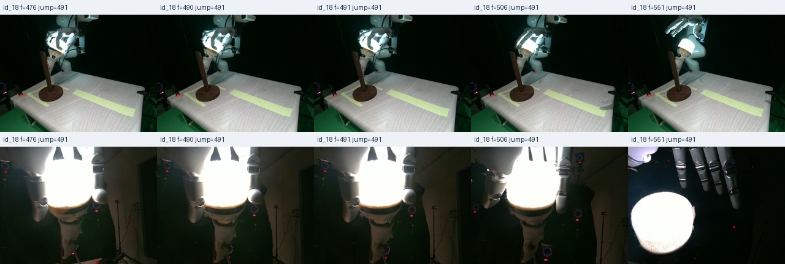
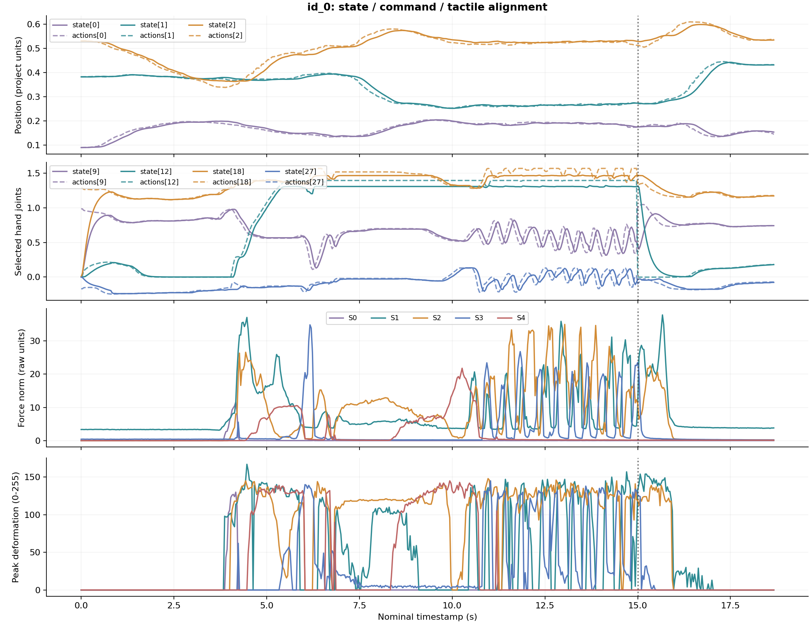

realworld_bulb_sft_260909
真实机器人灯泡拧入任务 · 离线数据检查与轨迹浏览
75
完整轨迹
48,894
有效帧
27.16 分钟
标称总时长
33.19 GiB
目录文件总量
逐轨迹画面
每路相机均匀抽取 5 帧。可以切换轨迹检查起始、操作过程与结束状态。
 image 从画面看为外部视角，extra_view_image 为随手臂运动的近景视角。
image 从画面看为外部视角，extra_view_image 为随手臂运动的近景视角。
动作切换复核示例
id_18 的手部动作在第 491 帧发生明显变化。画面与随后的松手、撤离过程一致；该推断仍需结合采集端逻辑确认。


检查范围：75 条完整轨迹的低维数据、触觉形变和 timing 全量扫描；97,788 张图像检查非空、PNG 首尾及相邻字节重复；750 张均匀抽样图像完整解码，另读取动作切换附近画面。原始数据未修改。